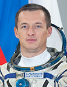

Lyndon B. Johnson Space Center
Houston, Texas 77058
|
National Aeronautics and Space Administration Lyndon B. Johnson Space Center Houston, Texas 77058 |
 |
Biographical Data |
||
Sergey Nikolaevich Ryzhikov
Russian Test-Cosmonaut
PERSONAL DATA: Born August 19, 1974 in Bugulma, Tatarstan, Russia.
EDUCATION: Graduated from the Kacha Air Force Pilot School as pilot-engineer in 1996.
AWARDS: Medals for distinguished military service of class 2 and 3, medal for military valour of class 2.
SPACEFLIGHT TRAINING: He was selected as a test-cosmonaut candidate of the Gagarin Cosmonaut Training Center Cosmonaut Office in October of 2006 (cosmonauts group 14). Ryzhikov finished basic space training in June 2009, and was qualified as test-cosmonaut.
EXPERIENCE: From 1996 till 1997 he served as a pilot of the training air regiment in Saratov Region, in 1997 as a senior pilot of the fighter air regiment in Tver Region, from 1997 till 2007 as a pilot, senior pilot, chief of an air flight, chief executive officer of the fighter air regiment in Chita Region. Flew Л-39, Mig-29 aircraft. Major of the Air Force (ret), Class 2 military pilot.
JANUARY 2014